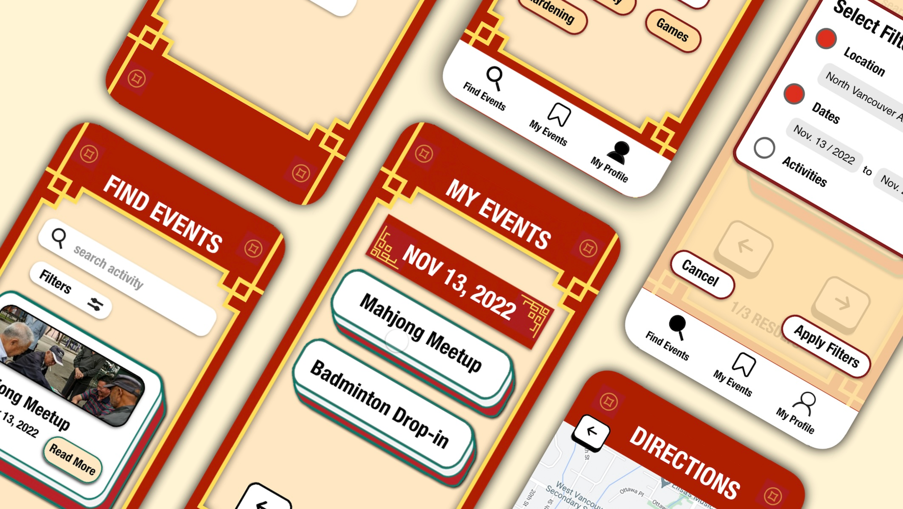

-

Mah Jian
UX + UI | UX Researching | Heuristic Evaluation
Mah Jian is an event finder application for immigrant seniors in Canada is a mobile application designed to help seniors who have recently immigrated to Canada to discover and participate in local events that are tailored to their needs and interests.
-

Chronos Website Design
UX + UI | Prototyping | Usability Metrics
Chronos is an online platform designed to provide customers with an easy and convenient way to purchase high-quality watches. The website is user-friendly and features a wide selection of watches from top brands.